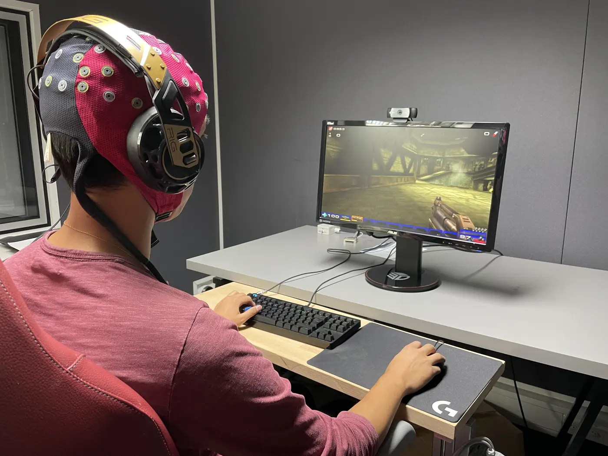
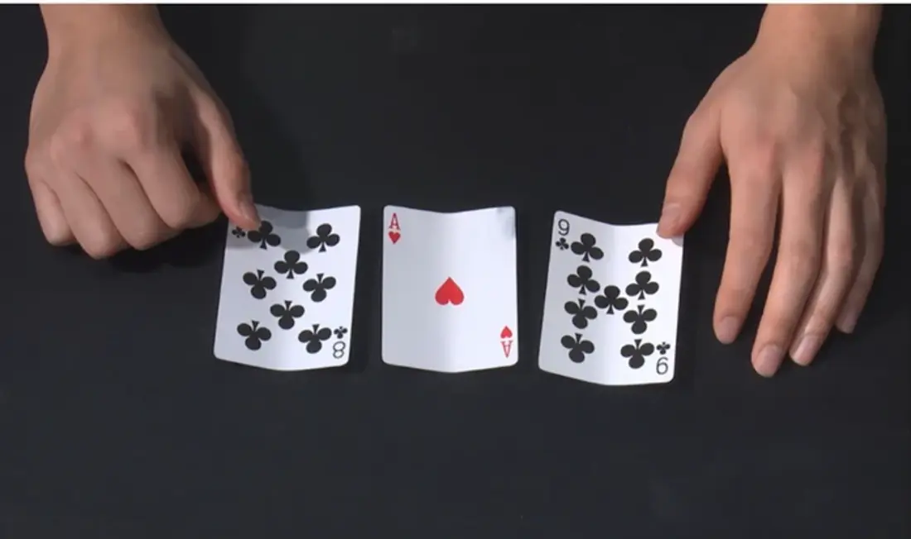

Arthur Nguyễn
Un neuroscientifique aussi à l’aise dans un jeu de données que dans une salle pleine de monde, et qui mène les choses à bien.
Aujourd’hui : Qualité de vie au travail, Hôpitaux Universitaires de Genève (HUG).
Pendant huit ans, au Brain & Learning Lab, Université de Genève (Campus Biotech), j’ai mené des recherches comportementales et EEG sur le flow dans les jeux vidéo.
En parallèle, je crée des expériences immersives in situ et j’y joue, du Musée d’Art et d’Histoire de Genève au campus où je travaillais. J’ai également mis en scène des spectacles de théâtre-forum pour l’Université de Lausanne. Je pratique l’improvisation théâtrale, parfois depuis un piano, et anime ponctuellement des ateliers.
La recherche et le design d’expérience s’avèrent partager une même méthode : se mettre à la place des autres, traduire ce qu’on observe en intention claire (une hypothèse, ou une note d’intention), puis la tester avec de vraies personnes.

Salle 1
Ma façon de travailler
Trois fils, tissés ensemble
La plupart des projets commencent par le premier, demandent le deuxième et se concluent par le troisième. En pratique, ils se chevauchent sans cesse.
01Comprendre
Recherche comportementale · données · analyse
Observer d’abord. Puis poser des questions précises, recueillir des données fiables, et en tirer des conclusions honnêtes.
- J’ai remarqué, à plusieurs reprises, que les spectateurs ne voyaient pas une marque qui aurait dû faire échouer mon tour de cartes. J’en ai fait une expérience, aujourd’hui publiée dans Scientific Reports.
- J’ai intégré l’expérience des participants à la méthode : des personnes qui se sentent bienvenues et en sécurité donnent des données plus propres. Plus de 170 personnes ont ainsi participé à mon étude EEG.
- J’ai construit des pipelines d’analyse qui tournent de bout en bout et régénèrent des rapports clairs et cohérents, que d’autres peuvent vérifier et relancer.
02Concevoir pour et avec les autres
Facilitation · narration · design d’expérience
Écouter et recueillir des histoires, repérer les forces de chacun, puis placer les gens là où ils trouvent leur place et où on a besoin d’eux, ou trouver ce qui les relie. Concevoir des expériences où l’on entre en confiance et où l’on a envie de rester.
- J’ai écrit et mis en scène des projets participatifs : du théâtre-forum pour l’Université de Lausanne, du théâtre immersif au Musée d’Art et d’Histoire, un ARG d’Halloween pour mon campus.
- J’ai co-présidé la Social Campus Biotech Association, en créant une communauté vivante sur un campus de plusieurs bâtiments, avec un événement mensuel pour plus de 150 personnes.
- J’ai accompagné 9 jeunes chercheurs et coaché de nombreuses personnes en prise de parole, dont une courte séance avant le pitch réussi d’une collègue pour une bourse Ambizione de 830 000 CHF.
03Mener à bien
Planification · résolution de problèmes · réalisation
Anticiper, voir venir les problèmes, alléger la charge. Avancer vite, rester calme sous pression, sans jamais renoncer au plaisir.
- Depuis 2011, j’ai mené des événements et des projets avec des musées, des universités et des associations, souvent avec des équipes bénévoles et des délais serrés, et j’ai appris de l’intérieur comment tournent de bien plus grosses machines, notamment à Disneyland Paris et au Montreux Jazz Festival.
- Chez Google, j’ai repéré une routine manuelle à laquelle l’équipe s’était habituée. Soucieux de nous simplifier la vie, j’ai écrit des scripts shell, puis une version Excel pour les collègues moins à l’aise avec la ligne de commande, afin que chacun soit déchargé de la partie répétitive.
- J’ai conçu et développé en quelques jours des jeux sur navigateur pour des retraites de labo, joués ensemble sur les téléphones de chacun, en m’appuyant sur des années de game design. Rapide parce que j’avais posé l’intention en amont et que je connaissais le groupe ; sans risque parce que je les avais conçus avec soin.
Salle 2
Projets choisis
Des projets que j’ai menés
Chacun a son récit détaillé : la demande ou la question, ce que j’ai fait, et ce que j’en retiens. Je les ai menés, aux côtés de mentors, de regards extérieurs et des équipes qui les ont rendus possibles.

Flow, distraction et beaucoup d’EEG
En état de flow, le cerveau semble toujours enregistrer les distractions, sans pour autant y réagir. Et : des données propres issues de plus de 170 personnes en train de jouer.
Lire le récit →
A MAH-tter of Life and Death
Une enquête immersive dans l’aile égyptienne, pour 50 personnes du grand public.
Lire le récit →
La marque que personne n’a vue
Une routine de magie close-up, une carte qui aurait dû trahir le tour, et une expérience sur ce que l’on ne voit pas.
Lire le récit →
Des vies déviées
Les biais implicites dans le monde académique, joués par des chercheurs et chercheuses qui sont aussi interprètes, avec un public qui propose comment changer les scènes et des comédiens qui l’essaient en direct.
Lire le récit →
Un ARG d’Halloween
Une fausse entreprise, un test de recrutement qui tourne mal, de la VR et des comédiens. Créé en trois semaines sans budget.
Lire le récit →Salle 3
Aussi
Des rôles plus discrets, les mêmes fils
- 2026Liotard Awakens, Musée d’Art et d’Histoire. Des portraits qui parlent : des comédiens encadrés comme les tableaux de Liotard, discutant avec les visiteurs lors d’un afterwork. Porté et mis en scène par Yohann Thenaisie, avec des comédiens de The Murderet et toute une équipe créative, costumes et scénographie compris. Le concept est né de nos brainstormings ; j’ai ensuite accompagné le metteur en scène comme assistant concept designer et regard extérieur, et aidé à faire avancer les choses en coulisses.
- 2018–2023Social Campus Biotech Association. Co-président. Communauté, bien-être et sens, sur un campus où les gens se parlaient peu. Ce que l’on voyait, c’était un événement mensuel pour plus de 150 personnes. Derrière, une enquête auprès des membres et un focus group ont fixé le cap.
- 2022Science Me!, Genève. Maître de cérémonie bilingue pendant deux jours d’un concours international de médiation scientifique, lors de la Nuit de la Science : 16 équipes, plus de 2 300 spectateurs. J’avais préparé à l’avance la prononciation du nom de chaque membre des équipes, telle qu’on le dit chez eux.
- Depuis 2014Création et conseil en projets immersifs. Créer des jeux et des expériences immersives, puis conseiller d’autres personnes sur les leurs : transformer une idée en quelque chose de faisable dans des contraintes réelles. La sécurité d’abord : depuis 2022, pour chaque spectacle auquel je participe, je mets en place des protocoles pour les cas limites entre jeu d’acteur et game mastering, et j’y forme l’équipe en présence de la ou des personnes qui portent le projet, pour que les interprètes sachent que la production les soutient.
- 2025Lemanic Life Sciences Hackathon, EPFL. Direction d’une équipe jusqu’à une mention honorable : sur 12 équipes et plus de 110 participants, la seule à aborder l’éthique, comme le demandait la consigne.
- 2019Formation Innosuisse Business Concept (Science2Market). Direction d’une équipe de quatre sur l’usage de l’IoT et de l’analyse de données pour personnaliser des expériences immersives à grande échelle.
- 2017Google, Zürich. Analyste politique Shopping : classification et qualité des données des offres Google Shopping, plus de l’automatisation qui ne figurait pas dans mon cahier des charges.
- 2015Goshaba, Paris. Analyse de données (Python, SQL) et revues de littérature pour de nouveaux tests comportementaux, dans une start-up qui évaluait la cognition par le jeu vidéo.
- 2012–2015Disneyland Paris. Mon premier emploi officiel, sur quatre étés. Trois comme opérateur animateur d’attraction à Phantom Manor et à la Tour de la Terreur, où l’on reste dans son rôle : gérer l’exploitation et la sécurité devant des groupes allant jusqu’à 80 personnes tout en tenant un personnage, et juger à chaque instant quand passer de l’un à l’autre. La sécurité d’abord, puis la courtoisie, l’inclusion, le spectacle et l’efficacité. Un été à la billetterie ; les deux postes m’ont appris à encaisser et la diplomatie. Et la simple curiosité m’a poussé à explorer le reste du parc et à y rencontrer des gens. Mon travail immersif et d’animation a commencé là.
- 2013–2015Ascoergo, Bordeaux. Vice-président de l’association des étudiants en sciences cognitives, membre de la Fresco, la fédération française des étudiants en sciences cognitives : une équipe de 11, des conférences scientifiques informelles dans des bars, une table ronde d’anciens. Là où ma vie associative a commencé.
Salle 4
Interventions & publications
Articles, interventions, film
- 2026Nguyen, A.*, Alexander, R. G.*, Venkatakrishnan, A., Macknik, S. L., & Martinez-Conde, S. Assessing the role of magician patter on deception in the Three-Card Monte. Scientific Reports, 16, 14770. *co-premiers auteurs
- 2026Flow et distraction dans le jeu vidéo. Poster, FENS Forum 2026. Poster (PDF)
- 2023Nguyen, A., & Bavelier, D. Play in video games. Neuroscience & Biobehavioral Reviews. Article
- Depuis 2022La sécurité dans la performance immersive. Des protocoles pour les cas limites entre jeu d’acteur et game mastering, et une formation pour chaque équipe avec laquelle je joue, en présence de la ou des personnes qui portent le projet, pour que les interprètes sachent que la production les soutient.
- 2022Qu’est-ce qui fait fonctionner une expérience immersive ? Nomenclature, état de l’art et exemples, pour une communauté de GNistes.
- 2021Expériences immersives et changement social. Intervention invitée, master en innovation et durabilité.
- 2021Un court métrage, réalisé en un week-end. Hackathon SciFilmIt : des équipes de scientifiques, de cinéastes et une « boîte noire ». J’étais la boîte noire, le liant entre les deux. Voir
- VidéoDes vies déviées, première partie · Bande-annonce de l’ARG d’Halloween · Soutenance de thèse
Arrière-salle
À côté
Curiosité et jeu
Les deux traversent tout ce que je fais ; c’est en improvisation qu’ils ont aujourd’hui le plus de place, et c’est là que j’ai affiné ma narration, mon esprit d’équipe et ma confiance dans le processus. Elle s’est construite sur ce qui était déjà là : l’écoute, venue de la musique, l’animation, venue de Disney, et une aisance à ne pas savoir ce qui vient ensuite. Je joue sérieusement depuis 2022, en anglais et en français : avec The Murderet, une troupe d’improvisation qui m’a aussi permis d’approfondir mon travail immersif, et avec The Living Room, mon propre projet. J’ai aussi mis en scène des spectacles, tenu le piano comme directeur musical, géré la régie, animé des jams, donné des ateliers, et fait venir des formateurs internationaux à Genève pour enrichir la scène locale.
Piano : classique, puis jazz, puis production musicale. Ma spécialité : le déchiffrage, l’accompagnement (musique de chambre, ou construire en direct la structure d’une chanson pour un chanteur qui improvise), et improviser une musique sous une scène.
Escape games : plus de 120, dont certains des meilleurs au monde, et je voyage pour eux, comme pour le théâtre immersif. Tant qu’on n’en a pas vécu un excellent, difficile d’imaginer à quel point l’expérience peut être haut de gamme. Moitié loisir, moitié recherche en design.
Et aussi : magie de proximité (une fois pour la science), danse du lion, origami et un peu de plongée.
Bonneteau
Un petit clin d’œil à ma recherche. Suivez la carte rouge.
Contact